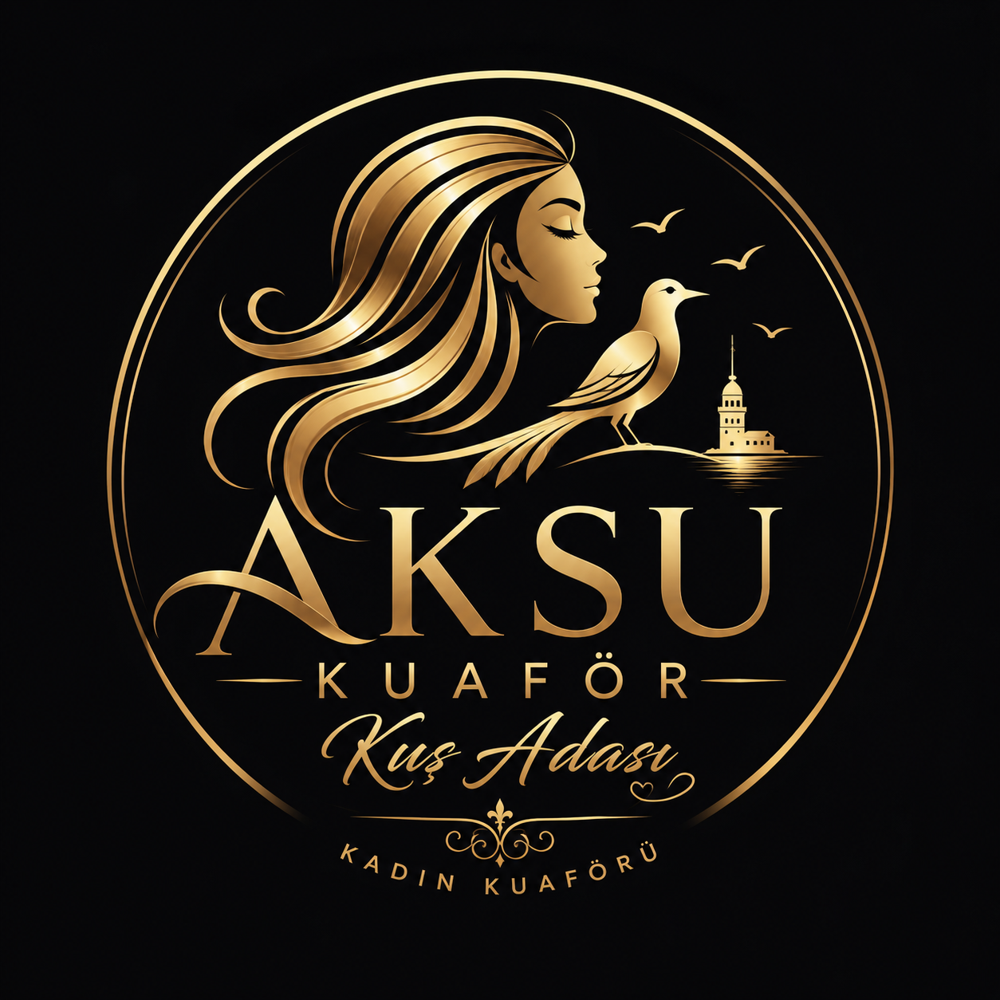

saç tasarım
kesim fön balyaj boya perma ve kişiye özel saç uygulamaları
saç tırnak bakım ve özel gün hazırlığında aile sıcaklığıyla profesyonel salon hizmeti

2009 yılından beri AKSU KUAFÖR olarak saç ve tırnak hizmetlerinde kaliteli samimi ve özenli bir deneyim sunuyoruz güler yüzlü hizmet aile sıcaklığı ve profesyonel uygulama anlayışı salonun temel çizgisidir
kesim fön balyaj boya perma ve kişiye özel saç uygulamaları
manikür pedikür ve zarif görünüm odaklı bakım hizmetleri
özel gün saç makyaj ve salon hazırlığı için özenli dokunuşlar
kaş şekillendirme kirpik ve yüz ifadesini güçlendiren detaylar
yoğunluğa göre yardımcı olunur ama beklememek için WhatsApp üzerinden randevu almanız önerilir
pazar kapalıdır pazartesi cumartesi arası 09:00 20:00 saatlerinde hizmet verilir
evet saç tırnak bakım ve özel gün hazırlığı aynı salonda sunulur
Türkmen Mustafa Veli Sok No 8/B 09400 Kuşadası Aydın
saç tırnak ve özel gün hazırlığında premium salon deneyimi için tek dokunuş yeterli
randevu al